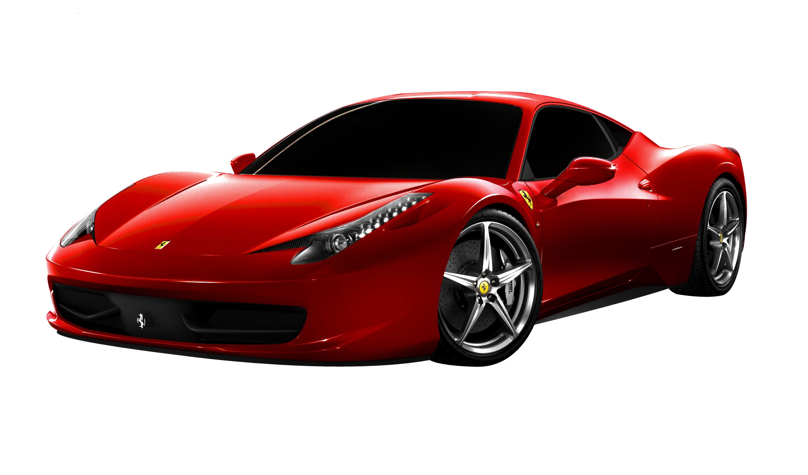

ninja h2r

The Kawasaki Ninja H2 is a supercharged four-stroke supersport-class[12] motorcycle in the Ninja sports bike series manufactured by Kawasaki, featuring a variable-speed centrifugal supercharger.[13][14][15][16] Its namesake is the 750 cc Kawasaki H2 Mach IV,[17][18] an inline triple that was introduced by Kawasaki in 1972 to "disrupt what it saw as a sleeping motorcycle market".[19]
ROYAL ENFIELD

Royal Enfield Heritage Royal Enfield is a company 100% controlled by the Indian conglomerate Eicher. Located in Chennai (India) is among the largest motorcycles company worldwide. The history of this company started at the at the beginning of the 20th century. Indeed, in 1901 Royal Enfield brought to the market its first motorcycles. In 1949 K. R. Sundaram Iyer launches Madras Motors to import British motorcycles within India’s territory. Besides Norton and Matchless machines, he sells Royal Enfields.
FERRARI
FacebookTwitterWhatsappLinkedin Ferrari is the first name that pops up in the mind of most people when you talk about fast and expensive sports cars. Although all Ferraris are special, a few rare models go down in history with some extreme records that are very difficult to break. One such rare model has now become the world’s most expensive Ferrari after selling for more than Rs 430 crore ($51.7 million) in an auction. The car that fetched over Rs 430 crore is a 1962 Ferrari 250 GTO. It is worth noting that all Ferrari 250 GTOs go for record numbers but what makes this one special is that it was the only Tipo 1962 campaigned by the factory racing team. Surprisingly, the most expensive Ferrari until now was another 250 GTO.
LAMBORGHINI

A revolutionary Raging Bull. Lamborghini has often felt like the last dinosaur, roaring forlornly in the face of electric’s meteoric impact. No more. The Revuelto has adapted to this new climate. The Aventador replacement, Lamborghini’s biggest beast, is now a plug-in hybrid. It features three electric motors. There is no reverse gear, that’s done electrically. There’s no clumsiness either: the handling is far more sophisticated, so too the electrical integration. The gearbox no longer thrashes your head back and forth like a metaller in a mosh pit. There’s more space in the cabin and – ‘alleluja – the seats are no longer as pious as a church pew, but instead embrace and coddle.